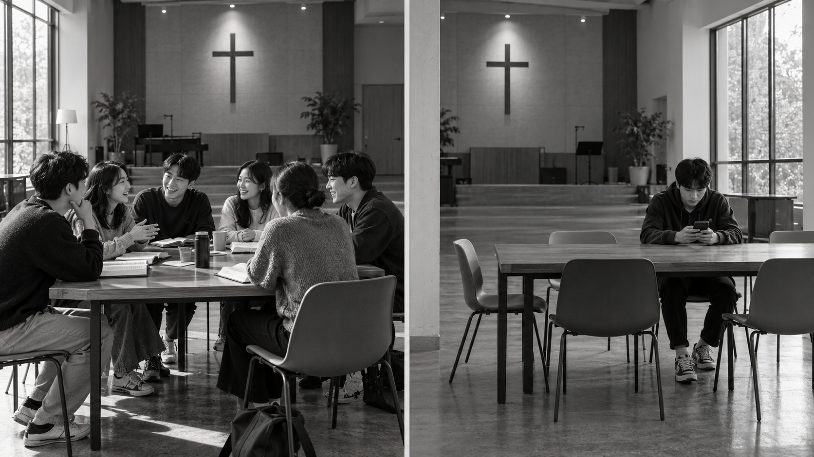
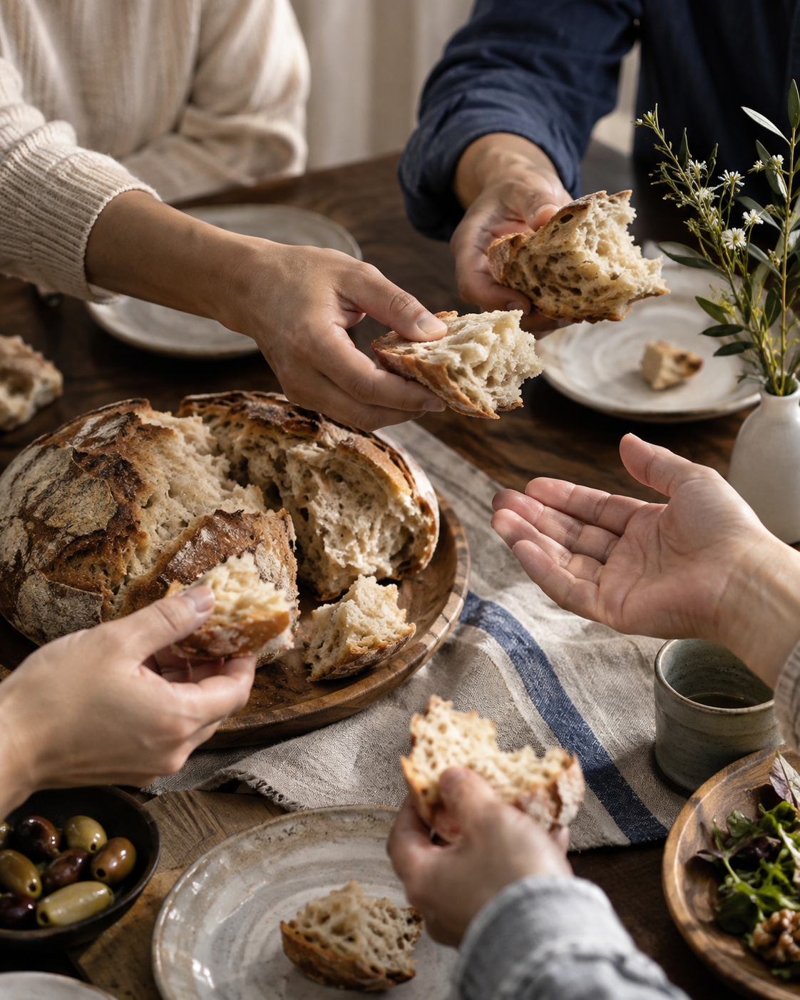

LEADER
GUIDE
사도행전 2:39–47
39이 약속은 너희와 너희 자녀와 모든 먼 데 사람 곧 주 우리 하나님이 얼마든지 부르시는 자들에게 하신 것이라 하고
40또 여러 말로 확증하며 권하여 이르되 너희가 이 패역한 세대에서 구원을 받으라 하니
41그 말을 받은 사람들은 세례를 받으매 이 날에 신도의 수가 삼천이나 더하더라
42그들이 사도의 가르침을 받아 서로 교제하고 떡을 떼며 오로지 기도하기를 힘쓰니라
43사람마다 두려워하는데 사도들로 말미암아 기사와 표적이 많이 나타나니
44믿는 사람이 다 함께 있어 모든 물건을 서로 통용하고
45또 재산과 소유를 팔아 각 사람의 필요를 따라 나눠 주며
46날마다 마음을 같이하여 성전에 모이기를 힘쓰고 집에서 떡을 떼며 기쁨과 순전한 마음으로 음식을 먹고
47하나님을 찬미하며 또 온 백성에게 칭송을 받으니 주께서 구원 받는 사람을 날마다 더하게 하시니라

GBS의 목표와 비전
| 본문의 명제 | 반대되는 태도·가치관 |
|---|---|
| 가르침을 받아라 | 자기중심적 진리관 — 내 생각이 기준이다 |
| 서로 교제하라 | 개인주의 — 타인과 얽히고 싶지 않다 |
| 떡을 떼라 | 배타주의 — 내 사람들과만 나눈다 |
| 기도에 힘쓰라 | 자기 의존 — 내 힘으로 해결한다 |
| 필요를 따라 나누고 섬기라 | 이기주의 — 내 이익과 필요가 먼저다 |
| 마음을 하나로 하라 | 분파주의 — 서로 편을 가르고 대립한다 |
| 모이기를 힘쓰라 | 편의주의 — 내게 편할 때만 참여한다 |
| 하나님을 찬양하라 | 자기 영광 추구 — 내가 높아지고 인정받아야 한다 |
1. 가르치고, 가르침을 받으라
18예수께서 나아와 말씀하여 이르시되 하늘과 땅의 모든 권세를 내게 주셨으니
19그러므로 너희는 가서 모든 민족을 제자로 삼아 아버지와 아들과 성령의 이름으로 세례를 베풀고
20내가 너희에게 분부한 모든 것을 가르쳐 지키게 하라 볼지어다 내가 세상 끝날까지 너희와 항상 함께 있으리라 하시니라
2. 서로 교제하라
그가 빛 가운데 계신 것 같이 우리도 빛 가운데 행하면 우리가 서로 사귐이 있고 그 아들 예수의 피가 우리를 모든 죄에서 깨끗하게 하실 것이요

3. 떡을 떼라
날마다 마음을 같이하여 성전에 모이기를 힘쓰고 집에서 떡을 떼며 기쁨과 순전한 마음으로 음식을 먹고
4. 기도에 힘쓰라
소망 중에 즐거워하며 환난 중에 참으며 기도에 항상 힘쓰며
5. 필요를 따라 나누고 섬기라
17누가 이 세상의 재물을 가지고 형제의 궁핍함을 보고도 도와 줄 마음을 닫으면 하나님의 사랑이 어찌 그 속에 거하겠느냐
18자녀들아 우리가 말과 혀로만 사랑하지 말고 행함과 진실함으로 하자
6. 마음을 하나로 하라
마음을 같이하여 같은 사랑을 가지고 뜻을 합하며 한마음을 품어
7. 모이기를 힘쓰라
24서로 돌아보아 사랑과 선행을 격려하며
25모이기를 폐하는 어떤 사람들의 습관과 같이 하지 말고 오직 권하여 그 날이 가까움을 볼수록 더욱 그리하자
8. 하나님을 찬양하라
그러므로 우리는 예수로 말미암아 항상 찬송의 제사를 하나님께 드리자 이는 그 이름을 증언하는 입술의 열매니라